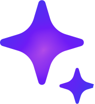
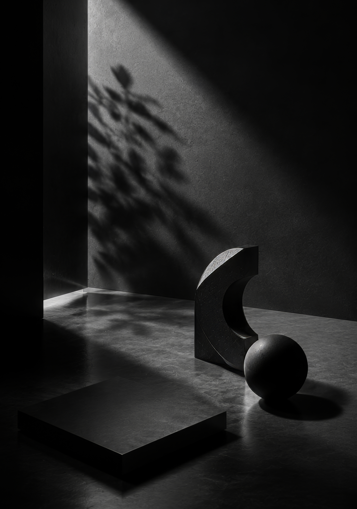
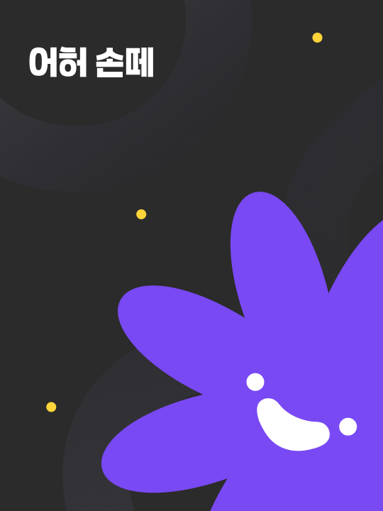

하나의 흐름으로 이어
하나의 흐름으로 이어
Moodle Diary
글과 그림의 부담을 줄여 누구나 꾸준히 기록할 수 있도록 만든 다이어리 앱입니다. 기획에 참여하고 사용자 중심으로 설계한 프로젝트입니다.
UX/UIMobile AppAI

Design Philosophy

글과 그림의 부담을 줄여 누구나 꾸준히 기록할 수 있도록 만든 다이어리 앱입니다. 기획에 참여하고 사용자 중심으로 설계한 프로젝트입니다.

AI 기반 취향 분석으로 선물 선택의 고민을 줄이는 서비스입니다. 개인 프로젝트로 기획부터 UX/UI 설계까지 전 과정을 진행했습니다.

Interaction
Interaction Design
스크롤, 모션, 전환을 활용한 인터랙션 설계. 콘텐츠의 리듬에 맞춰 자연스럽게 이어지는 경험을 만듭니다.

Prototyping
Motion & Prototyping
프로토타입과 마이크로 인터랙션으로 아이디어를 빠르게 검증하고, 실제 사용감을 설계에 반영했습니다.

Ops
Design Ops
팀의 디자인 프로세스와 핸드오프를 체계화해, 반복 작업을 줄이고 일관성을 높였습니다.

Brand
Brand & Visual
로고부터 제품 UI까지 일관된 비주얼 언어를 정립해 브랜드 경험을 하나로 이었습니다.